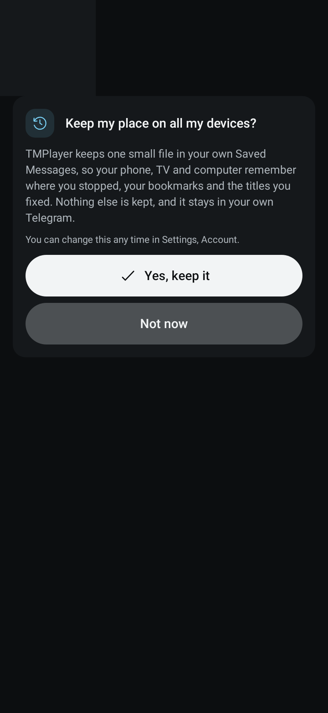
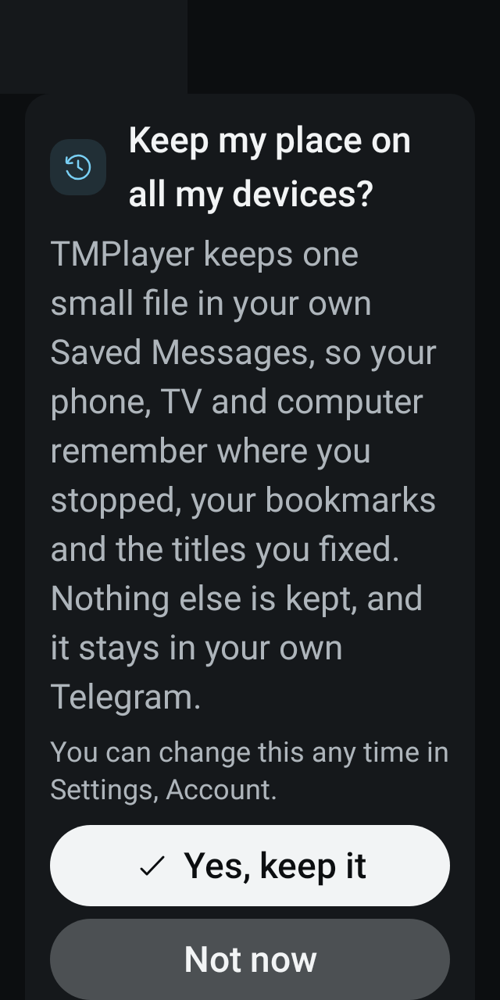
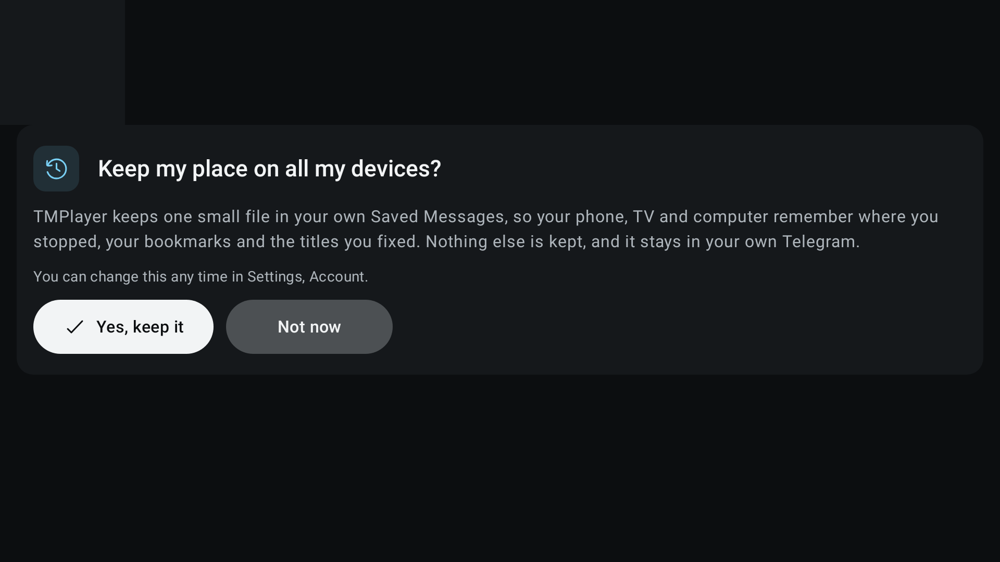
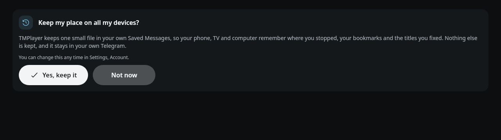
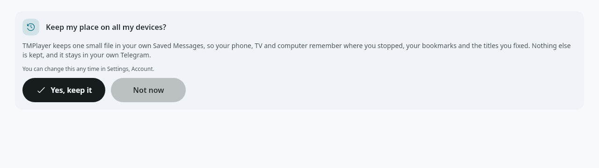
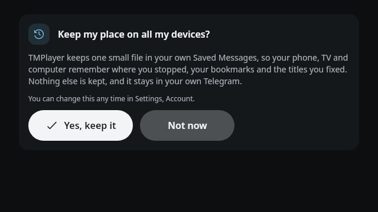
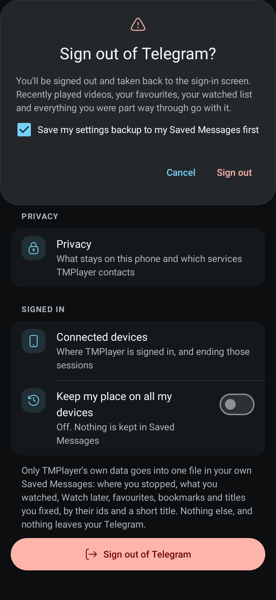
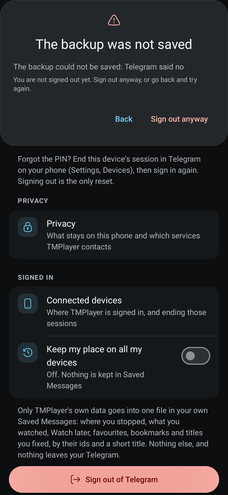

Keep my place on all my devices, and the backup before sign out
Rendered by KeepPlaceTest (app render tests, dark theme, no device) and the desktop KeepPlaceCardTest. Design note: design/redesign/sync-saved-messages.md.
The question, asked once at the end of Home

Phone 411 dp: the buttons stack and are as wide as the card.

320 dp at a 1.5 font: the list scrolls, nothing is cut.

TV 960 x 540 dp: side by side; Down from the last row lands on Yes, Right goes to Not now.

Desktop 1280, dark. Tab and Enter.

Desktop 1280, light.

Desktop at the window's narrowest (640).
Sign out saves a backup first

Phone: the tick is on; Account's new switch is visible behind.

A failed backup says why, and offers Sign out anyway or Back.